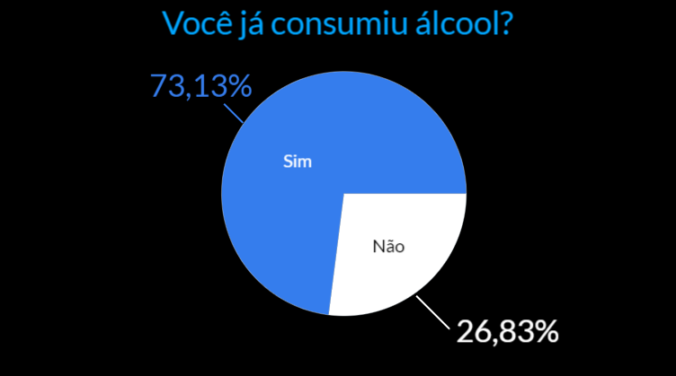
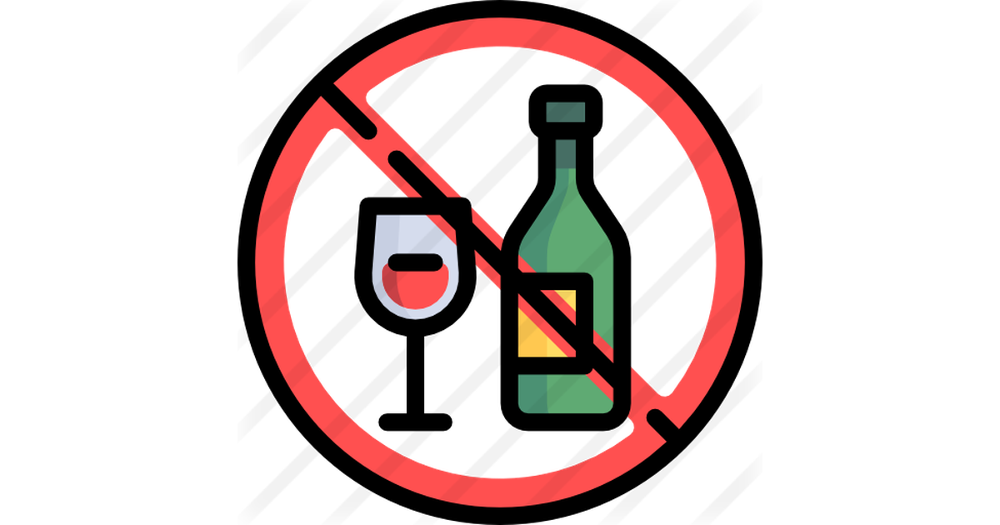
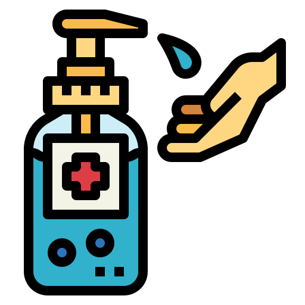

O Grande Problema Do Consumo De Bebidas Fermentadas Cada Vez Mais Precocemente e Suas Políticas Públicas
São consideradas políticas públicas do álcool aquelas que dizem respeito à relação entre álcool, segurança, saúde e bem-estar social. Definem-se políticas do álcool como qualquer esforço ou decisão de autoridades governamentais ou de organizações não-governamentais (ONG) para minimizar ou prevenir problemas relacionados a esse vício.
Essa pesquisa visa conscientizar sobre os problemas gerados pelo alcoolismo, a fim de evitar que mais famílias, relacionamentos e vidas sejam prejudicados por este vício.
Aprofundando em nossas pesquisas, o álcool tem algumas funções diferentes no cérebro. Ele reprime um neurotransmissor excitatório, o glutamato, e aumenta um neurotransmissor inibitório, o GABA (ácido gama-aminobutírico). Isso significa que os pensamentos, movimentos e fala são prejudicados e ficam mais prejudicados à medida que o consumo aumenta. O efeito repressivo do álcool como depressor do sistema nervoso significa que ele desacelera partes do cérebro. As áreas que ela afeta incluem aquelas que controlam a inibição, o pensamento, a percepção, a atenção, o julgamento, a memória, o sono e a coordenação.
No entanto, o álcool também aumenta a liberação do neurotransmissor dopamina, que é conhecido por seu papel no “sistema de recompensa” do seu cérebro. Isso faz com que seu cérebro pense que está se divertindo e, portanto, pode-se continuar a beber para perseguir a liberação de dopamina. No entanto, com exposição consistente, os efeitos da dopamina começam a diminuir. Neste ponto, a pessoa está frequentemente ligada aos efeitos da dopamina, então continua a beber com a esperança de sentir o “alto”, apesar de não o receber.
Sendo assim as várias áreas já citadas, que são afetadas no cérebro ao consumir tal droga, comprova que ao beber e dirigir, por exemplo, o risco de acidentes provocados aumenta em grande escala, e uma pesquisa realizada em Diadema (São Paulo) concluiu que quase 20% 4 dos motoristas pesquisados com bafômetros estavam dirigindo com níveis de álcool iguais ou maiores que os permitidos pela lei seca.
Ao direcionar os olhares para os jovens, os números são extremamente preocupantes, em 2014 foi realizado um estudo sobre consumo de bebidas fermentadas por faixa etária. Dos 1250 estudantes entrevistados, 64% já experimentaram algum tipo de bebida alcoólica e 41% foram crianças de 10 a 12 anos. No colégio São José, em que fazemos parte, realizamos um questionário parecido no qual foi direcionado aos alunos do ensino médio, na faixa etária de 14 a 17 anos. Obtivemos 67 respostas onde 49 das 63 pessoas disseram que já beberam algum tipo de bebida alcoólica, apresentado no gráfico 1.
Como podemos observar no gráfico 1, mais de 70% das pessoas entrevistadas já beberão algum tipo de bebida alcoólica, e isto é bem preocupante já que este questionário foi feito em uma escola onde todos os estudantes são menores de idade. Ao beber em uma idade tão jovem, pelo álcool ser decomposto pelo fígado, isso produz substâncias químicas nocivas que podem danificar e matar as células do fígado. Embora o fígado seja muito bom em se reparar, ele não consegue acompanhar os danos causados pelo consumo regular de muito álcool. Isso pode causar cicatrizes que se acumulam e levam à cirrose precocemente. Porém, todos esses números altos e dano causado somente aumentam mesmo possuindo políticas públicas tão bem definidas em todo mundo.
São consideradas políticas públicas do álcool aquelas que dizem respeito à relação entre álcool, segurança, saúde e bem-estar social. Definem-se políticas do álcool como qualquer esforço ou decisão de autoridades governamentais ou de organizações não-governamentais (ONG) para minimizar ou prevenir problemas relacionados a esse vício.
No Brasil, algumas leis federais propõem ações regulamentárias relacionadas às bebidas alcoólicas. Entre elas destacam-se a proibição da venda de bebidas alcoólicas para menores de 18 anos (artigo 243 do Estatuto da Criança e do Adolescente, Lei 8.069/90 e Lei das Contravenções Penais, artigo 63) e a legislação do Código Brasileiro de Trânsito (artigo 165), que considera como infração gravíssima dirigir alcoolizado com níveis de álcool superior a seis decigramas por litro de sangue. O condutor fica sujeito à multa, suspensão do direito de dirigir, retenção do veículo e recolhimento da sua carteira de habilitação.
Reconhecendo que nenhuma política é efetiva, a menos que seja fiscalizada permanentemente, um estudo nacional mostrou que menores de idade de 13 a 17 anos conseguiram facilmente comprar bebidas alcoólicas em diferentes tipos de estabelecimento. Sem multa e fiscalização adequada, dificilmente poderia haver condições de se promover uma melhora nesta situação. O que funciona realmente é a certeza de que uma determinada infração será punida.
Pensando em mudar essa realidade, existem diversos projetos de intervenção para tais problemas. A redução de danos ao uso de álcool pode ser realizada a partir de políticas e estratégias incluem várias práticas, como a educação sobre os riscos que o consumo de drogas provoca, a prevenção de overdoses, a orientação e a promoção da abstinência e de estilos de vida saudável, os serviços de atenção médica, psicológica e social.
As Estratégias de Redução de Danos não pressupõem que deva haver imediata e obrigatória extinção do uso de drogas, mas formulam práticas, direcionadas àqueles que usam drogas e aos grupos sociais com os quais convivem, que visam diminuir os danos causados por elas.
Uma dessas novas tentativas de ajudar famílias é o programa de Assistência ao cidadão para alcoólatras proposto pelo deputado Valdomiro Lopes (PSB) na lei 307/2002, prevendo a concessão mensal de cesta básica de 20 quilos às famílias de dependentes químicos em tratamento por um período de incentivo à recuperação de até um ano.
O presente projeto de lei tem por objetivo instituir Dia Nacional de Prevenção Contra o Uso e o Abuso do Consumo de Bebida Alcoólica, a ser realizado, anualmente, no dia 10 de 6 junho. A iniciativa visa prevenir e alertar a sociedade brasileira que a droga mais consumida em seu território é a bebida alcoólica.
A assistência a usuários de álcool deve ser oferecida em todos os níveis de atenção, iniciando na atenção primária com o cuidado do Programa de Saúde da Família e acompanhamento dos agentes comunitários de saúde e podendo necessitar de tratamento extra-hospitalar, como no caso dos Centros de Atenção Psicossocial
Ao almejar uma utilidade de que alguma forma o álcool forneça auxilio médico, buscamos informações que levam a uma conclusão. O álcool em altas concentrações é bastante tóxico, o que o torna útil para matar germes. Os géis e toalhetes alcoólicos para as mãos são um meio essencial de prevenção de infecções, já atendidos recentemente pelo mundo por conta do COVID-19, e os enxaguantes bucais também costumam usar álcool. No entanto, beber álcool não funciona para curar doenças infecciosas
Tem sido sugerido que o álcool com moderação pode trazer alguns benefícios para a saúde. No entanto, quaisquer benefícios de saúde sugeridos são superados pelo dano potencial à sua saúde.
Historicamente, o álcool era usado para entorpecer as pessoas antes de realizar operações dolorosas, como arrancar os dentes. O etanol também tem sido usado como antídoto para envenenamento por metanol, um álcool químico mais tóxico que causa cegueira e morte.
Com todo o estudo analisado, é definitivo que o consumo de álcool é extremamente prejudicial à sociedade e as políticas públicas são ineficientes. Ou seja, é muito importante que haja maior fiscalização das leis pelo Ministério da Justiça e Segurança Pública, órgão responsável pelas políticas antidrogas, e também o Governo Federal, órgão responsável pela administração e cumprimento de leis nacionais, para que sejam mais eficazes a fim de que possamos ter uma qualidade de vida melhor em nossa sociedade como um todo.